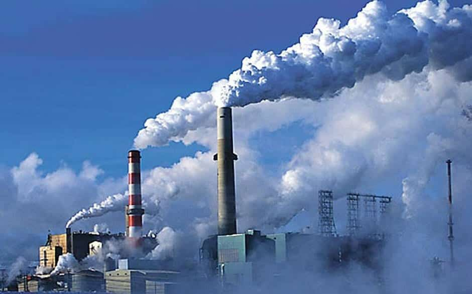

Aquecimento Global: A Crescente Emergência Climática

O aquecimento global é um dos tópicos mais discutidos e preocupantes da atualidade, definindo-se pelo aumento progressivo da temperatura média do planeta, predominantemente como resultado das atividades humanas. Esse fenômeno não é apenas percebido nas temperaturas elevadas, mas também nas frequentes mudanças climáticas extremas que observamos.
Uma das principais razões para o aquecimento global é o acúmulo de gases de efeito estufa, como o dióxido de carbono (CO2), na atmosfera. Atividades como a queima de combustíveis fósseis, o desmatamento em larga escala e a industrialização desenfreada têm contribuído significativamente para esse acúmulo. Quando esses gases se acumulam, criam uma espécie de "cobertor" ao redor do planeta, que retém calor e intensifica o efeito estufa natural da Terra.
As implicações deste aquecimento são vastas e preocupantes. Estamos vendo inundações mais frequentes em algumas regiões, secas prolongadas em outras, furacões mais intensos e um derretimento acelerado das calotas polares. Esses fenômenos não apenas afetam os ecossistemas e a biodiversidade, mas também têm impactos significativos na vida das pessoas e na economia global.
Para combater esta emergência climática, é necessária uma ação coletiva. Governos, empresas e cidadãos precisam reconhecer a gravidade do problema e tomar medidas para reduzir as emissões de gases de efeito estufa. Isto implica em promover o uso de energias limpas e renováveis, além de incentivar práticas mais sustentáveis em todos os setores da sociedade.
Por outro lado, há sinais promissores no horizonte. Iniciativas como o Acordo de Paris têm por objetivo unir nações em um esforço comum para combater a mudança climática. Além disso, o avanço tecnológico no desenvolvimento de fontes de energia mais limpas é um indicativo positivo do caminho que estamos começando a trilhar.
Em conclusão, o aquecimento global é uma realidade inegável e uma ameaça presente. A solução exige esforço, cooperação e determinação de todos nós, para garantir um futuro mais seguro e sustentável para as próximas gerações.